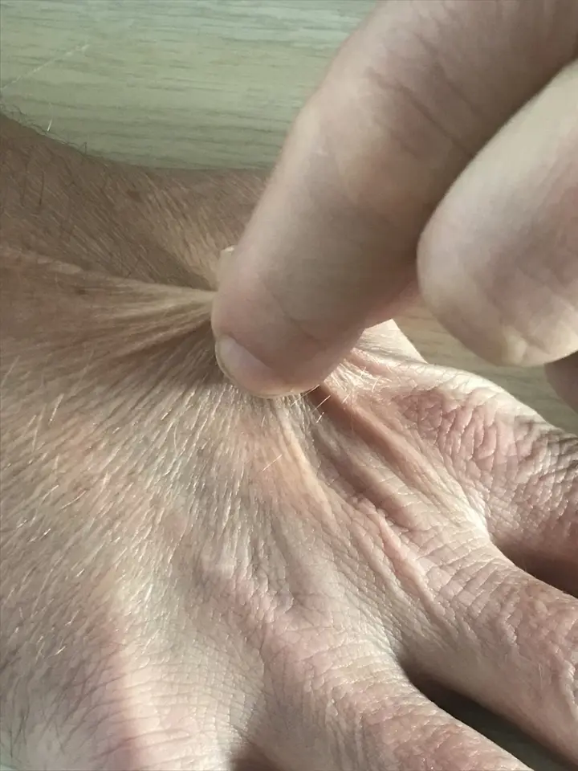

DX.2 — Polydipsie primaire (potomanie, polydipsie psychogène)
1. Définition et sémantique
Soif excessive, polydipsiePROFILES
- Symptômes relatifs à l'ingestion de liquides contiennent la polydipsie.
- FièvreLa fièvre désigne une élévation de la température corporelle ; la CIM la classe avec les symptômes généraux. reste au même niveau.
- Malaise et fatigueLe malaise et la fatigue désignent une sensation de faiblesse générale ; la CIM les classe avec les symptômes généraux. reste au même niveau.
- Syncope et collapsusLa syncope est une perte de connaissance brève avec récupération spontanée ; la CIM la place au même niveau. reste au même niveau.
- ŒdèmeL'œdème est un excès de liquide dans les tissus ; la CIM le place au même niveau. reste au même niveau.
- CachexieLa cachexie est une dénutrition sévère avec fonte musculaire ; la CIM la place au même niveau. reste au même niveau.
Symptômes relatifs à l'ingestion de liquidesCIM-10, R63
- Polydipsie
- AnorexieL'anorexie est une perte ou une diminution de l'appétit ; la CIM la place au même niveau que la polydipsie. reste au même niveau.
- PolyphagieLa polyphagie est une prise alimentaire excessive ; la CIM la place au même niveau que la polydipsie. reste au même niveau.
- Perte de poids anormaleLa perte de poids anormale est un amaigrissement non voulu ; la CIM la place au même niveau que la polydipsie. reste au même niveau.
- Prise de poids anormaleLa prise de poids anormale est un gain de poids non expliqué ; la CIM la place au même niveau que la polydipsie. reste au même niveau.
PolydipsieCIM-10, R63.1
- Polydipsie primaire
- Polydipsie secondaireSoif excessive causée par une maladie ou un médicament, par exemple un diabète sucré ou un diurétique.
Polydipsie primaire
- Polydipsie psychogène
- Polydipsie dipsogène
- Potomanie de la bière en est une forme.
La polydipsie primaire est une prise excessive de liquides, avec élimination durable d'une grande quantité d'urine diluée. La diurèse dépasse 40 à 50 mL/kg/24 h, soit 3000 mL par jour pour 60 kg, après exclusion des causes secondaires.1
Elle est décrite surtout dans la schizophrénie, d'où le nom de polydipsie psychogène. Elle ressemble au diabète sucré et au diabète insipideLa polyurie provient d'un déficit de vasopressine (forme centrale) ou d'une résistance rénale à la vasopressine (forme néphrogénique).. Elle s'en distingue, car le patient boit d'abord, puis il urine. La glycémie est normale.1,2
Ne pas confondre avec la polydipsie secondaire, où la soif suit une perte d'eau : diabète sucré, hypercalcémie, diurétiques, déshydratation.
La polydipsie primaire fait partie du syndrome polyuro-polydipsique. Il faut donc exclure le diabète insipide, central ou néphrogénique.1
2. Épidémiologie (Suisse, puis Europe)
La revue suisse de 2017 chiffre la prévalence chez les patients schizophrènes, comme le montre le tableau suivant.1
| Élément | Contenu |
|---|---|
| Dans la schizophrénie | 11 à 20 % des patients ont une polydipsie (revue, Bâle, 2017). |
| Parmi les polyuriques | 84,4 % des 176 patients avec symptômes urinaires bas et polyurie > 2,5 L/j avaient une polydipsie primaire (cabinets d'urologie, États-Unis, 2022).3 |
| Polyurie hypotonique, centres spécialisés | Sur 144 patients de 11 centres (2013-2017), le diagnostic final est une polydipsie primaire chez 82 patients (57 %), un diabète insipide central chez 59 (41 %) et un diabète insipide néphrogénique chez 3 (2 %)9. |
| Cohorte d'urologie (États-Unis, 2022) | Diabète sucré mal équilibré 7,8 % ; maladie rénale chronique de stade 3 4,7 % ; diabète insipide 3,1 %. |
| Sexe | Les formes psychogène et dipsogène touchent plutôt les femmes ; la potomanie de la bière touche plutôt les hommes. |
| Âge, groupes à risque | Âge avancé, insuffisance rénale, malnutrition, anorexie, antidépresseurs, antipsychotiques, diurétiques, infection, stress. |
| Mortalité, gravité | Environ 20 % des patients schizophrènes avec polydipsie développent une hyponatrémie. Le risque augmente avec la durée de la maladie. |
| Enjeux | Les conseils de boire beaucoup, donnés hors psychiatrie, augmentent le nombre de cas. Le dépistage vise donc l'hyponatrémie. |
Un nombre croissant de cas touche des patients non psychiatriques, notamment des personnes actives et soucieuses de leur santé.1
3. Physiopathologie
L'eau corporelle reste stable grâce à la soif et à l'arginine-vasopressineHormone antidiurétique libérée par l'hypophyse postérieure : elle fait retenir l'eau par le rein. Une osmolalité élevée et un volume sanguin bas la stimulent.. Quand l'osmolalité plasmatique monte, l'hypothalamus déclenche la soif et libère l'AVP. Chez le sujet sain, boire au-delà de la soif devient désagréable et s'arrête.
La revue suisse pose plusieurs hypothèses. Il s'agit d'un dérèglement du mécanisme de la soif, d'un rôle de l'hippocampe, d'un comportement qui réduit le stress et de lésions de zones cérébrales précises.1 La pathogenèse reste donc mal connue.1
Cascade de la cause au signe
- Amorce (niveau moléculaire et cellulaire). Le contrôle de la soif est déréglé. Dans la psychose, le stress active l'axe hypothalamo-hypophysaire et l'AVP. Une hausse de dopamine stimule la boisson chez l'animal. Le volume de l'hippocampe est diminué chez les patients polydipsiques.
- Développement (niveau tissulaire). Le patient boit plus que ses besoins. L'osmolalité plasmatique baisse, l'AVP est freinée, et le rein excrète une urine diluée en grande quantité.
- Installation (niveau clinique). Polydipsie et polyurie s'installent sans hyperglycémie. Le rein peut éliminer 15 à 18 L par jour lorsque l'apport en solutés est normal3.
- Maintien. Avec le temps, le seuil de la soif baisse. Le patient boit malgré une osmolalité basse. L'AVP n'est plus freinée complètement.
- Complication aiguë. L'hyponatrémie survient quand l'apport d'eau libre dépasse son excrétion. Une faible prise de solutés fait chuter la capacité d'excrétion de 15 L à 4 L par jour3. L'AVP, déclenchée par le stress, l'infection ou des médicaments, aggrave la rétention d'eau.
Ces mécanismes expliquent la gravité. L'hyponatrémie cause un œdème cérébral, des convulsions, des chutes, une rhabdomyolyse et une myélinolyse centropontine. À long terme, la diurèse massive dilate la vessie et diminue la capacité de concentration rénale. Ces données sont de faible niveau de preuve.
| Lésion ou perturbation | Exploration qui la montre | Thérapeutique et mécanisme |
|---|---|---|
| Soif déréglée sans déficit d'eau | Urine diluée, natrémie basse à normale basse, copeptine stimulée haute | Réduction de la boisson, thérapie comportementale : corriger le comportement. |
| Psychose aiguë avec hausse d'AVP | Contexte psychiatrique, natrémie | Antipsychotique (Zyprexa®La DCI est l'olanzapine. Sa classe est celle des antipsychotiques atypiques (ATC N05AH03). Elle appartient au groupe des antipsychotiques (ATC N05A). Les chefs de file sont la clozapine, l'olanzapine et la quétiapine. Les indications AIPS sont la schizophrénie et les épisodes maniaques du trouble bipolaire6. L'usage dans la polydipsie ne relève pas d'une indication AIPS : il repose sur des séries de cas, de faible niveau de preuve. La posologie AIPS dans la schizophrénie est de 10 mg par jour au départ, avec un ajustement entre 5 et 20 mg par jour6., Leponex®La DCI est la clozapine. Sa classe est celle des antipsychotiques atypiques (ATC N05AH02). Elle appartient au groupe des antipsychotiques (ATC N05A). Les chefs de file du groupe sont la clozapine, l'olanzapine et la quétiapine. Les indications AIPS sont la schizophrénie résistante au traitement et la réduction du comportement suicidaire récurrent7. L'usage dans la polydipsie ne relève pas d'une indication AIPS : il repose sur des séries de cas. La posologie AIPS dans la schizophrénie résistante est de 12,5 à 25 mg le premier jour, puis une augmentation de 25 à 50 mg par jour jusqu'à 300 mg7. L'efficacité habituelle apparaît à 200-450 mg par jour, avec un maximum de 900 mg7. La numération des neutrophiles est obligatoire7.) : traite la psychose ; l'effet propre sur la soif est incertain.1 |
| Rétention d'eau et hyponatrémie | Natrémie, osmolalité plasmatique et urinaire | Restriction hydrique ; sérum salé hypertonique à 3 %La DCI est le chlorure de sodium en solution hypertonique. Sa classe est celle des solutés d'électrolytes par voie IV (ATC B05XA03). Elle appartient au groupe des solutés d'électrolytes IV (ATC B05XA). Les chefs de file sont le chlorure de sodium et le chlorure de potassium. L'indication est l'hyponatrémie profonde et symptomatique1. La recommandation européenne de 2014 prévoit de perfuser 150 mL de solution à 3 % par voie IV en 20 minutes8. Le médecin contrôle ensuite la natrémie et répète la perfusion de 150 mL, deux fois au plus, jusqu'à une montée de 5 mmol/L8. La natrémie ne doit pas monter de plus de 10 mmol/L en 24 heures, puis de plus de 8 mmol/L par 24 heures suivantes8. si hyponatrémie profonde symptomatique.1 |
| Faible apport en solutés | Anamnèse alimentaire, anorexie, bière | Alimentation équilibrée : rétablit la capacité d'excrétion de l'eau. |
| Déficit d'AVP (diabète insipide central) | Copeptine stimulée basse | Traitement par Minirin®La DCI est la desmopressine. Sa classe est celle des analogues synthétiques de la vasopressine, antidiurétiques (ATC H01BA02). Elle appartient au groupe des hormones hypophysaires postérieures (ATC H01B). Les chefs de file sont la vasopressine, la desmopressine et la terlipressine. Les indications AIPS sont le diabète insipide central, la polyurie et la polydipsie après chirurgie hypophysaire, puis l'énurésie nocturne dès 5 ans5. La posologie AIPS dans le diabète insipide est de 0,1 mg 3 fois par jour au départ, avec une dose moyenne de 0,2 à 1,2 mg par jour5. Elle est contre-indiquée en cas de polydipsie primaire ou psychogène (diurèse > 40 mL/kg/24 h)5. Elle l'est aussi en cas d'hyponatrémie, d'insuffisance cardiaque, de clairance de la créatinine < 50 mL/min et de SIADH5. : remplace l'AVP15. Il est contre-indiqué dans la polydipsie primaire.5 |
4. Démarche diagnostique
Le titre est la polydipsie primaire. La démarche repère d'abord un danger vital, puis exclut les causes de polyurie, puis sépare la polydipsie primaire du diabète insipide.
Étape 1 : les drapeaux rouges se lisent en cliquant sur chaque signe
- Confusion, céphalées, vomissements, convulsionsCes signes traduisent une hyponatrémie sévère avec œdème cérébral. Il faut alors mesurer la natrémie en urgence. imposent une natrémie immédiate.
- Boisson massive récenteUn apport aigu de plusieurs litres dépasse la capacité d'excrétion et abaisse la natrémie en quelques heures. impose un contrôle de la natrémie.
- Glycémie élevée ou cétonesCette valeur évoque le diabète sucré, première cause de polyurie à écarter ; voir diabète sucré. oriente vers la filière du diabète.
- Natrémie élevéeCette valeur évoque un diabète insipide non compensé ou une perte d'eau, donc l'inverse de la polydipsie primaire. écarte la polydipsie primaire.
- Calcémie élevée, créatinine élevéeHypercalcémie et insuffisance rénale causent une polyurie secondaire. indiquent une cause secondaire.
- Médicaments à risqueAntidépresseurs, antipsychotiques, antiépileptiques, thiazidiques et lithium favorisent l'hyponatrémie par l'AVP ; le lithium cause un diabète insipide néphrogénique.
Étape 2 : en l'absence de drapeau rouge, la marche à suivre est la suivante
- Le journal mictionnel de 24 heures confirme la polyurie lorsque la diurèse dépasse 40 mL/kg/24 h1.
- Le clinicien écarte le diabète sucré (glycémie), l'insuffisance rénale (créatinine) et l'hypercalcémie (calcium).
- Il mesure ensuite la natrémie, l'osmolalité plasmatique et l'osmolalité urinaire.
- Une natrémie normale basse avec une urine diluée oriente vers une polydipsie primaire probable.1
- Une natrémie normale haute ou une urine peu concentrée impose de mesurer la copeptine (point 9).
| Diagnostic | Signe ou examen qui tranche | Piège | Conduite si le résultat est positif |
|---|---|---|---|
| Hyponatrémie symptomatique | Natrémie basse, osmolalité plasmatique basse | Attribuer la confusion à la psychose seule | Il faut arrêter les boissons et corriger la natrémie selon l'urgence chronologique du point 118. |
| Diabète sucré décompensé | Glycémie élevée | Penser à une cause psychiatrique d'emblée | La filière du diabète prend le relais, car la glycémie élevée explique la polyurie. |
| Diabète insipide central | Copeptine stimulée < 4,9 pmol/L | Donner de la desmopressine à un patient polydipsique : risque d'hyponatrémie grave5 | Il faut passer à l'IRM hypophysaire et à la desmopressine, car le déficit en vasopressine est établi2. |
| Diabète insipide néphrogénique | Copeptine basale > 21,4 pmol/L | Cause médicamenteuse (lithium) oubliée | Il faut rechercher la cause rénale ou médicamenteuse, puis demander un avis d'endocrinologie2. |
5. Anamnèse ciblée et drapeaux rouges
| Question | Pourquoi elle change la décision |
|---|---|
| Le début est-il progressif ou brutal ? | Un début insidieuxProgressif, sans date précise. évoque la polydipsie ; un début brutal évoque le diabète insipide. |
| Se réveille-t-il la nuit pour boire ? | Les polydipsiques nient souvent la nycturieBesoin d'uriner la nuit, réveil pour uriner. et la boisson nocturne. |
| Combien boit-il, et quoi ? | Le volume réel oriente ; la bière implique la potomanie avec faible apport en solutés. |
| Antécédents psychiatriques : psychose, anxiété, dépression, anorexie, dépendance ? | Ils définissent la forme psychogèneSoif ou boisson d'origine psychique, sans déficit d'eau.. |
| Traumatisme crânien, sarcoïdose, tuberculose, vasculite ? | Ils lèsent l'hypothalamus et causent une soif accrue. |
| Médicaments : antidépresseursLeur effet anticholinergique donne une bouche sèche et augmente la soif., antipsychotiques, diurétiques, lithium ? | Ils déclenchent soif ou rétention d'eau ; le lithium peut causer un diabète insipide. |
| Régime pauvre en sel, jeûne ? | Une faible prise de solutés réduit la capacité d'excréter l'eau. |
| Sport intense, régime « détox », conseils de boire 3 L ? | Ils expliquent la forme habituelle (dipsogène). |
| Infection, stress, douleur récents ? | Ils stimulent l'AVP et favorisent l'hyponatrémie3. |
Chaque drapeau rouge déclenche une action immédiate, comme le montre le tableau suivant.
| Drapeau rouge | Signification | Action immédiate |
|---|---|---|
| Confusion, convulsion ou vomissements | Hyponatrémie sévère avec œdème cérébral1 | Il faut mesurer la natrémie sans délai et transférer le patient aux urgences. |
| Boisson massive récente | La capacité d'excrétion de l'eau est dépassée1 | Il faut contrôler la natrémie. |
| Glycémie élevée | Diabète sucré, cause secondaire de polyurie3 | Il faut suivre la filière du diabète. |
| Doute entre diabète insipide et polydipsie primaire | Les deux entités se ressemblent2 | Il faut demander un avis d'endocrinologie. |
6. Examen physique ciblé, région par région
| Région | Normal attendu | Signes à rechercher |
|---|---|---|
| Général | Poids stable, conscient | Poids quotidienPeser le matin, après la miction, avec la même balance. Une prise rapide de poids traduit une rétention d'eau. Piège : le poids varie aussi avec l'alimentation., état de conscienceOrientation, vigilance. Une confusion fait craindre une hyponatrémie sévère. |
| Hydratation | Muqueuses humides, pli cutané normal | Pli cutané et muqueusesPincer la peau de l'avant-bras. Un pli persistant ou une langue sèche évoque la déshydratation, donc un diabète insipide ou une polyurie osmotique. Peu fiable chez le sujet âgé. |
| Volume | Œdèmes absents, tension artérielle normale | ŒdèmesPresser 5 secondes la face antérieure du tibia3. Un godet traduit une surcharge hydrique., hypotension orthostatiqueMesurer couché puis debout à 1 et 3 minutes3. Une baisse de 20 mmHg ou plus de la systolique traduit une hypovolémie, donc plutôt un diabète insipide. |
| Neurologique | Orientation conservée, pas de déficit | Asterixis, convulsion, trouble de conscienceSignes de l'hyponatrémie sévère3. Piège : confusion attribuée à la maladie psychiatrique., champ visuelExamen par confrontation. Une amputation évoque une lésion de la région hypophysaire (diabète insipide central). |
| Abdomen | Pas de globe vésical | Globe vésicalPercuter et palper l'hypogastre. Une masse mate signale une vessie dilatée, complication d'une polyurie chronique. |
| Bouche | Salive normale | Sécheresse buccaleElle suggère une prise d'anticholinergiques ou un syndrome de Sjögren ; elle favorise la boisson. |
Le pli cutané montre le geste d'examen de l'hydratation. Il sépare la polydipsie primaire, où le pli est normal, du diabète insipide non compensé, où la déshydratation le rend persistant.
Pli cutané : geste de recherche d'une déshydratation. Photographie clinique, dos de la main, pli cutané pincé entre pouce et index

Lisez d'abord seul ce cliché (pli cutané : geste de recherche d'une déshydratation) : cherchez vous-même le signe.
La copie annotée (pli cutané : geste de recherche d'une déshydratation) numérote les repères décrits ci-dessous.
- Le pouce et l'index pincent la peau du dos de la main.
- La peau soulevée devient un pli en tente.
- Chez le sujet âgé, la peau perd son élasticité : le pli persiste sans déshydratation.
- Un pli normal ne permet pas d'exclure un diabète insipide compensé par la boisson.
Ce que l'image décide. Pli normal et poids stable : la déshydratation est absente, ce qui oriente vers la polydipsie primaire. Pli qui persiste : chercher un diabète insipide ou une perte d'eau et mesurer la natrémie.
Pli cutané qui persiste après relâchement. Photographie clinique, dos de la main, signe du pli cutané positif

Lisez d'abord seul ce cliché (pli cutané qui persiste après relâchement) : cherchez vous-même le signe.
La copie annotée (pli cutané qui persiste après relâchement) numérote les repères décrits ci-dessous.
- Le pli de peau reste visible après le relâchement.
- Le signe du pli ne détecte qu'une déshydratation franche.
- Il manque de fiabilité chez la personne âgée.
Ce que l'image décide. Un pli persistant impose de mesurer la natrémie et de chercher une perte d'eau avant de retenir une polydipsie primaire.
7. Approche syndromique
Les signes physiques se recherchent donc à l'examen. L'urine claire de densité basse et le poids stable orientent vers la polydipsie primaire. La déshydratation et une natrémie haute orientent vers le diabète insipide.
7.1 Syndrome polyuro-polydipsique
| Type | Signe | Définition, recherche, mécanisme |
|---|---|---|
| Fonctionnel | PolydipsieSoif excessive avec boisson abondante. prédominante | Le comportement ou le seuil de soif déréglé précède la polyurie. |
| Fonctionnel | PolyurieDiurèse supérieure à 40 mL/kg/24 h3. Se mesure par le journal mictionnel. diluée | L'AVP est freinée par la baisse de l'osmolalité. |
| Physique | Urine claire, densité basseObserver l'urine fraîche ; mesurer la densité à la bandelette. Une densité inférieure à 1,005 traduit une urine diluée (repère classique)3. Piège : une urine claire existe aussi après une boisson récente. | Urine diluée : osmolalité urinaire basse. |
| Physique | Poids stable, pas de déshydratationPeser et chercher le pli cutané. Normal : poids constant, muqueuses humides. Pathologique : perte de poids et pli persistant, qui évoquent un diabète insipide. | Le patient compense par la boisson. |
7.2 Syndrome d'hyponatrémie
| Type | Signe | Définition, mécanisme |
|---|---|---|
| Fonctionnel | Céphalées, nausées, vomissementsInterroger sur leur apparition après une boisson abondante. Ils précèdent les signes neurologiques graves. | Œdème cérébral par entrée d'eau dans les cellules. |
| Physique | Confusion, convulsions, comaÉvaluer l'orientation, puis le score de Glasgow. Normal : orienté et vigilant. Pathologique : désorientation ou crise convulsive, qui imposent une natrémie immédiate. | Œdème cérébral sévère. |
| Physique | Prise de poids, œdèmesPeser chaque jour ; presser le tibia 5 secondes pour chercher un godet3. Normal : poids stable, pas de godet. | Rétention d'eau libre. |
7.3 Le syndrome du diabète insipide est le diagnostic différentiel3
| Type | Signe | Définition, mécanisme |
|---|---|---|
| Fonctionnel | Polyurie brutale, nycturie, soif nocturneDemander l'heure de début et les réveils nocturnes pour boire. Normal : au plus un réveil par nuit. Pathologique : réveils répétés, début brutal. Ces signes sont rares dans la polydipsie primaire. | Déficit d'AVP ou résistance rénale : le rein ne concentre pas.1 |
| Physique | DéshydratationRechercher pli cutané, muqueuses sèches, baisse de tension à l'orthostatisme. Piège : peu fiable chez le sujet âgé., natrémie haute | L'eau est perdue dans l'urine ; la boisson ne suffit pas. |
7.4 Le syndrome de complications chroniques apparaît à long terme1
| Organe | Signe | Mécanisme |
|---|---|---|
| Vessie, rein | Vessie dilatée, hydronéphrosePalper l'hypogastre, puis échographie. Normal : vessie non palpable après la miction. Pathologique : globe vésical ou dilatation des cavités rénales. | Diurèse massive prolongée.1 |
| Rein | Baisse de la concentration urinaireMesurer l'osmolalité urinaire après restriction hydrique. Une valeur qui reste basse traduit la perte de capacité de concentration. | Lavage de la médullaire et baisse de l'aquaporine-2. |
| Os | OstéopénieBaisse de densité osseuse à l'ostéodensitométrie ; lien avec la polydipsie non établi. | Données de faible niveau de preuve1. |
8. Diagnostic positif et critères
Le diagnostic repose sur la définition de la revue suisse de 2017 et sur la copeptine.1,2
| Critère | Seuil | Rôle |
|---|---|---|
| Polyurie diluée durable | > 40 à 50 mL/kg/24 h | Définit le syndrome polyuro-polydipsique |
| Causes secondaires exclues | Glycémie, créatinine, calcium normaux, pas de diurétique | Évite de nommer à tort une polydipsie primaire |
| Natrémie | Normale basse en cas de PP | Une natrémie haute évoque le diabète insipide |
| Copeptine basale | ≥ 21,4 pmol/L | Confirme le diabète insipide néphrogénique |
| Copeptine stimulée par le sérum salé hypertonique (natrémie > 147 mmol/L) | ≥ 4,9 pmol/L | Polydipsie primaire (en dessous : diabète insipide central) |
| Copeptine stimulée par l'arginine, à 60 minutes | ≥ 3,8 pmol/L | Polydipsie primaire (en dessous : diabète insipide central) |
Ne suffit pas : une natrémie normale, une urine diluée seule ou un contexte psychiatrique. Le diabète insipide partiel peut ressembler à la polydipsie primaire.1,2
Le tableau suivant montre les quatre causes de polyurie diluée
| Entité | Natrémie | Copeptine | Conduite |
|---|---|---|---|
| Polydipsie primaire | Normale basse | Stimulée ≥ 4,9 pmol/L (sérum salé) ou ≥ 3,8 pmol/L (arginine)2 | Restriction hydrique et suivi1 |
| Diabète insipide central | Normale haute à haute | Stimulée sous le seuil2 | IRM et desmopressine2 |
| Diabète insipide néphrogénique | Normale haute à haute | Basale ≥ 21,4 pmol/L2 | Chercher la cause rénale ou médicamenteuse2 |
| Diabète sucré | Variable | Non nécessaire : la glycémie élevée tranche | Filière du diabète3 |
9. Examens complémentaires
9.a Gold standard
Le test de restriction hydrique (1964) a été le gold standard12. Sa précision globale est de 70 % ; elle n'est que de 41 % pour la polydipsie primaire1. Le test au sérum salé hypertonique mesure la copeptine à une natrémie de 150 mmol/L (seuil 4,9 pmol/L)12. Sa précision atteint 97 % : sensibilité 93 %, spécificité 100 %12. Il doit remplacer la restriction hydrique comme gold standard. Une étude multicentrique de 2018 montre la différence entre les deux tests chez 141 patients analysés9. Le test de restriction hydrique pose le bon diagnostic dans 76,6 % des cas9. Le sérum salé hypertonique, avec un seuil de copeptine > 4,9 pmol/L, le pose dans 96,5 % des cas9. Pour séparer la polydipsie primaire d'un diabète insipide central partiel, la précision est de 73,3 % pour la restriction hydrique, contre 95,2 % pour le sérum salé9. Un événement indésirable grave est survenu pendant la restriction hydrique : une hyponatrémie induite par la desmopressine, avec hospitalisation9. La copeptine est en effet un marqueur de substitution fiable de l'AVP.1 Une copeptine basale ≥ 21,4 pmol/L, mesurée sans soif préalable, permet de diagnostiquer le diabète insipide néphrogénique2. La sensibilité et la spécificité atteignent alors 100 %.2
9.b Première intention
| Examen | Normal | Seuil | Signification | Conduite |
|---|---|---|---|---|
| Journal mictionnel 24 h | < 2,5 L/jour | > 40 mL/kg/24 h | Polyurie confirmée | Chercher la cause |
| Glycémie, HbA1c | Glycémie à jeun < 5,6 mmol/L | ≥ 7,0 mmol/L | Diabète sucré | Filière du diabète |
| Natrémie | 135 à 145 mmol/L | < 135 puis > 147 | Hyponatrémie ou hypernatrémie | Hyponatrémie : restriction ; hypernatrémie : diabète insipide |
| Osmolalité urinaire | Variable | Basse (< 300 mOsm/kg) | Urine diluée : polydipsie ou diabète insipide | Poursuivre par la copeptine |
| Créatinine, calcium | Selon le laboratoire | Élevés | Causes secondaires | Traiter la cause |
Prescription exacte : prélèvement sanguin sans stress ni effort préalable pour la copeptine, journal mictionnel sur 24 heures, ionogramme, glycémie, créatinine, calcium, osmolalités2. Les valeurs de référence dépendent du laboratoire exécutant.2
9.c Alternatives
Le test à l'arginine est plus court (1 heure), mieux toléré, sans surveillance continue de la natrémie2. Il convient à l'enfant, chez qui le test au sérum salé hypertonique est contre-indiqué. Le test au sérum salé hypertonique, lui, repose sur l'induction d'une hypernatrémie et exige une surveillance étroite de la natrémie10.
La copeptine plasmatique se mesure au départ, puis à 30, 45, 60, 90 et 120 minutes après l'arginine10. Chez l'adulte sain, la valeur médiane est de 5,2 pmol/L au départ, puis de 9,8 pmol/L au maximum10. Dans la polydipsie primaire, elle monte de 3,6 à 7,9 pmol/L10. Dans le diabète insipide, elle reste presque stable, de 2,1 à 2,5 pmol/L10. Le seuil de 3,8 pmol/L à 60 minutes atteint une précision de 93 %, une sensibilité de 93 % et une spécificité de 92 %10.
Le test a été validé chez des adultes dont la polyurie dépasse 50 mL/kg par jour10. Un vomissement précoce fausse le résultat, car deux patients ont été exclus de l'analyse pour cette raison10. La tolérance reste bonne, avec une gêne médiane de 3 à 3,5 sur 10 chez les patients10. La précision est un peu inférieure à celle du sérum salé hypertonique, et le seuil n'est donc pas encore validé de façon définitive.
9.d Deuxième intention
| Examen | Indication | Conduite |
|---|---|---|
| Copeptine basale | Sans soif préalable | ≥ 21,4 pmol/L : diabète insipide néphrogénique ; sinon test stimulé.1 |
| Test au sérum salé hypertonique | Copeptine basale < 21,4 | Bolus de 250 mL puis perfusion à 3 % jusqu'à une natrémie de 150 mmol/L. Surveillance étroite et natrémie rapide indispensables, car le test induit une hypernatrémie10. La copeptine se mesure dès que la natrémie atteint 150 mmol/L9. |
| Test à l'arginine | Alternative plus sûre | Copeptine à 60 minutes. |
| IRM de la région hypophysaire | Diabète insipide central confirmé ou suspicion de lésion | Chercher une lésion hypothalamo-hypophysaire1. |
10. Arbre décisionnel
| Si | → Alors |
|---|---|
| Confusion, convulsion, vomissements | Natrémie immédiate → hyponatrémie sévère : urgence |
| Glycémie élevée | Diabète sucré → voir la filière du diabète |
| Calcium ou créatinine élevés | Cause secondaire → traiter la cause |
| Natrémie normale basse, urine diluée | Polydipsie primaire probable → restriction hydrique et suivi |
| Natrémie normale haute ou doute | Copeptine basale |
| Copeptine basale ≥ 21,4 pmol/L | Diabète insipide néphrogénique |
| Copeptine basale < 21,4 pmol/L | Test stimulé → seuil 4,9 (sérum salé) ou 3,8 (arginine) |
| Copeptine stimulée au-dessus du seuil | Polydipsie primaire |
| Copeptine stimulée sous le seuil | Diabète insipide central → IRM et desmopressine |
11. Prise en charge selon les recommandations suisses
Le traitement suit la revue suisse de 2017 et celle de 2020 ; la correction de l'hyponatrémie suit la recommandation européenne de 20141. Le niveau de preuve est faible.1,4
11.A But thérapeutique
Le but est d'éviter l'hyponatrémie, de réduire la boisson à un volume adapté et de traiter la maladie associée. La natrémie visée est de 135 mmol/L ou plus1. Le volume de boisson cible est individualisé. La montée de la natrémie reste limitée à 10 mmol/L par 24 heures pendant la correction.1,8
11.B Moyens
A. L'urgence suit un ordre chronologique
Urgence — conduite chronologique : hyponatrémie profonde et symptomatique
- Il évalue la conscience et prélève la natrémie.
- Il arrête toute boisson, car la restriction hydrique est le traitement aigu de base.
- Il hospitalise le patient et surveille la natrémie de façon rapprochée.
- Si l'hyponatrémie est profonde et symptomatique, il perfuse du sérum salé hypertonique à 3 %1La DCI est le chlorure de sodium en solution hypertonique. Sa classe est celle des solutés d'électrolytes par voie IV (ATC B05XA03). Elle appartient au groupe des solutés d'électrolytes IV (ATC B05XA). Les chefs de file sont le chlorure de sodium et le chlorure de potassium. L'indication est l'hyponatrémie profonde et symptomatique1. La recommandation européenne de 2014 prévoit de perfuser 150 mL de solution à 3 % par voie IV en 20 minutes8. Le médecin contrôle ensuite la natrémie et répète la perfusion de 150 mL, deux fois au plus, jusqu'à une montée de 5 mmol/L8. La natrémie ne doit pas monter de plus de 10 mmol/L en 24 heures, puis de plus de 8 mmol/L par 24 heures suivantes8..1
- Il limite la montée de la natrémie à 10 mmol/L au plus en 24 heures, car une correction trop rapide expose au syndrome de démyélinisation osmotique8. Après l'arrêt des boissons, la polydipsie primaire peut en effet provoquer une diurèse aqueuse abondante, donc une montée rapide de la natrémie. Il faut alors surveiller la diurèse et la natrémie de près. Une correction trop rapide est fréquente dans la polydipsie primaire. Si la limite est dépassée, l'équipe arrête la perfusion de sérum salé et redonne de l'eau sans électrolytes sous surveillance spécialisée.8
- Il cherche et traite le facteur déclenchant : infection, médicament ou stress.
B. Hors urgence : ordre du traitement
- Mesures générales. Le médecin éduque le patient sur le risque d'hyponatrémie. La pesée fréquente détecte la rétention d'eau. Il faut garder un apport en solutés par une alimentation équilibrée. Il faut aussi éviter les médicaments qui sèchent la bouche.
- Non pharmacologique. La thérapie comportementale comprend l'éducation, la relaxation, le conditionnement et la thérapie de groupe. Les résultats sont variables et la mise en œuvre est lourde en ambulatoire.
- Pharmacologique. Dans la psychose, le médecin traite la maladie de fond par Zyprexa®La DCI est l'olanzapine. Sa classe est celle des antipsychotiques atypiques (ATC N05AH03). Elle appartient au groupe des antipsychotiques (ATC N05A). Les chefs de file sont la clozapine, l'olanzapine et la quétiapine. Les indications AIPS sont la schizophrénie et les épisodes maniaques du trouble bipolaire6. L'usage dans la polydipsie ne relève pas d'une indication AIPS : il repose sur des séries de cas, de faible niveau de preuve. La posologie AIPS dans la schizophrénie est de 10 mg par jour au départ, avec un ajustement entre 5 et 20 mg par jour6. ou Leponex®La DCI est la clozapine. Sa classe est celle des antipsychotiques atypiques (ATC N05AH02). Elle appartient au groupe des antipsychotiques (ATC N05A). Les chefs de file du groupe sont la clozapine, l'olanzapine et la quétiapine. Les indications AIPS sont la schizophrénie résistante au traitement et la réduction du comportement suicidaire récurrent7. L'usage dans la polydipsie ne relève pas d'une indication AIPS : il repose sur des séries de cas. La posologie AIPS dans la schizophrénie résistante est de 12,5 à 25 mg le premier jour, puis une augmentation de 25 à 50 mg par jour jusqu'à 300 mg7. L'efficacité habituelle apparaît à 200-450 mg par jour, avec un maximum de 900 mg7. La numération des neutrophiles est obligatoire7.. Le niveau de preuve est faible (séries de cas).1
- La desmopressine reste interdite : Minirin®La DCI est la desmopressine. Sa classe est celle des analogues synthétiques de la vasopressine, antidiurétiques (ATC H01BA02). Elle appartient au groupe des hormones hypophysaires postérieures (ATC H01B). Les chefs de file sont la vasopressine, la desmopressine et la terlipressine. Les indications AIPS sont le diabète insipide central, la polyurie et la polydipsie après chirurgie hypophysaire, puis l'énurésie nocturne dès 5 ans5. La posologie AIPS dans le diabète insipide est de 0,1 mg 3 fois par jour au départ, avec une dose moyenne de 0,2 à 1,2 mg par jour5. Elle est contre-indiquée en cas de polydipsie primaire ou psychogène (diurèse > 40 mL/kg/24 h)5. Elle l'est aussi en cas d'hyponatrémie, d'insuffisance cardiaque, de clairance de la créatinine < 50 mL/min et de SIADH5. est en effet contre-indiquée en polydipsie primaire (AIPS).
| Médicament | Dose AIPS (indication AIPS) | Contre-indication ou précaution | Surveillance |
|---|---|---|---|
| Minirin® | Diabète insipide central : 0,1 mg 3 fois par jour au départ, puis 0,2 à 1,2 mg par jour en moyenne5. Interdit en polydipsie primaire. | Contre-indiqué en polydipsie primaire, hyponatrémie, insuffisance cardiaque, SIADH ; risque de rétention d'eau | Natrémie avant le début, puis 3 jours après chez les plus de 65 ans5 |
| Zyprexa® | Schizophrénie : 10 mg par jour au départ, puis 5 à 20 mg par jour6 | Le médecin contrôle régulièrement la glycémie6 | Glycémie, poids |
| Leponex® | Schizophrénie résistante : 12,5 à 25 mg le premier jour, puis 25 à 50 mg par jour de plus, jusqu'à 300 mg ; maximum 900 mg par jour7 | La numération des neutrophiles est obligatoire ; l'hyponatrémie est très rare7 | Neutrophiles, natrémie |
Situations spéciales
| Situation | Conduite |
|---|---|
| Grossesse, allaitement | La conduite suit les mêmes principes que chez l'adulte : limiter la boisson et contrôler la natrémie ; olanzapine : seulement en cas de nécessité absolue pendant la grossesse, pas d'allaitement (AIPS Zyprexa®) ; clozapine : pas pendant la grossesse sauf nécessité absolue, pas d'allaitement (AIPS Leponex®).67 |
| Sujet âgé | Risque accru d'hyponatrémie ; contrôler la natrémie. |
| Enfant | Test à l'arginine préféré au test de perfusion saline hypertonique.2 |
| Insuffisance rénale | Capacité d'excrétion de l'eau réduite : risque d'hyponatrémie.1 |
Les aspects sociaux et professionnels comptent aussi
L'assurance maladie (LAMal) a pour rôle de rembourser les soins. Le médecin prescrit un arrêt de travail pendant l'hospitalisation. L'assurance-invalidité (LAI) intervient si la maladie psychiatrique est durablement invalidante. L'assurance-accidents (LAA) concerne l'accident, par exemple une chute due à une hyponatrémie. L'aptitude à conduire dépend de l'état psychiatrique et de la natrémie.
11.C Surveillance
| Quoi | Fréquence | Seuil d'alerte |
|---|---|---|
| Poids | Chaque jour, même balance | Prise de poids rapide : rétention d'eau |
| Natrémie | Rapprochée en cas d'hyponatrémie, puis selon le risque | < 135 mmol/L ; symptômes à partir d'une baisse rapide |
| Correction de la natrémie | Pendant la perfusion | > 10 mmol/L en 24 heures |
| Glycémie | Sous antipsychotique atypique | Hyperglycémie |
11.D Le pronostic dépend de l'hyponatrémie, et la sortie suit des critères12
Le risque d'hyponatrémie augmente avec la durée de la maladie. Les hospitalisations répétées et la mortalité sont plus élevées en cas d'hyponatrémie1. Trois critères autorisent la sortie : une natrémie stable d'au moins 135 mmol/L1, l'absence de symptôme et un plan défini de pesée et de limitation de boisson. En recherche, l'hippocampe et l'hypothalamus sont étudiés sur des modèles animaux. La validation du test à l'arginine est en cours.4,2
12. Prévention
| Niveau | Gestes | Cible |
|---|---|---|
| Primaire | Éviter les conseils de boire sans besoin. Informer les sportifs et les personnes soucieuses de santé. | Population générale, sportifs |
| Secondaire | Surveiller la natrémie et le poids chez les patients psychiatriques sous médicaments à risque. | Schizophrénie, antidépresseurs, antipsychotiques, diurétiques |
| Tertiaire | Thérapie comportementale, suivi psychiatrique, éducation à la pesée. | Polydipsie établie |
La revue suisse de 2017 est la source de cette prévention, qui repose sur trois constats1. D'abord, les conseils de boire beaucoup, donnés par des professionnels et des programmes de style de vie, semblent augmenter le nombre de cas1. Ensuite, la maladie aiguë, les médicaments et un faible apport en solutés réduisent la capacité d'excrétion rénale et font s'accumuler l'hyponatrémie1. Enfin, les traitements comportementaux et médicamenteux n'ont jamais été étudiés à grande échelle, et rarement chez les patients non psychiatriques1.
La prévention primaire consiste donc à ne pas imposer un volume fixe de boisson aux personnes actives et soucieuses de leur santé. La prévention secondaire cherche, lors de chaque maladie aiguë ou changement de médicament, un apport d'eau supérieur à l'excrétion1. La prévention tertiaire protège les patients psychotiques, car la polydipsie y reflète un stress hippocampique qui échappe à la régulation habituelle de l'eau4.
Le lien avec l'épidémiologie du point 2 justifie le dépistage de l'hyponatrémie chez les patients schizophrènes.
13. Points clés
Une polyurie diluée avec glycémie normale oriente vers la polydipsie primaire ou le diabète insipide.
Il faut d'abord écarter le diabète sucré, l'hypercalcémie et l'insuffisance rénale.
La copeptine stimulée est l'examen qui tranche : 4,9 pmol/L avec le sérum salé hypertonique, 3,8 pmol/L avec l'arginine14.
La desmopressine est contre-indiquée en polydipsie primaire à cause du risque d'hyponatrémie.
Le danger vital est l'hyponatrémie : natrémie immédiate devant confusion ou convulsion.
Le traitement de l'hyponatrémie profonde est la restriction hydrique, puis le sérum salé à 3 % sans dépasser 10 mmol/L en 24 heures14.
14. Pièges et questions fréquentes à l'examen fédéral suisse
Question. Quelle diurèse définit le syndrome polyuro-polydipsique ? Réponse. Plus de 40 à 50 mL/kg par 24 heures.1
Raison. Ce seuil sépare une polyurie vraie d'une simple hausse du volume urinaire, après exclusion des causes secondaires.1
Question. Peut-on donner de la desmopressine à un patient polydipsique ? Réponse. Non. Elle est contre-indiquée en polydipsie primaire (AIPS) : risque d'hyponatrémie grave.5
Raison. La vasopressine du patient est déjà freinée par l'excès d'eau, donc une antidiurèse supplémentaire retient l'eau et fait chuter la natrémie.
Question. Quel est le seuil de copeptine basale du diabète insipide néphrogénique ? Réponse. 21,4 pmol/L ou plus1.
Raison. La copeptine reste haute lorsque le rein résiste à la vasopressine, ce qui désigne le diabète insipide néphrogénique.2
Question. Quel seuil de copeptine stimulée par le sérum salé hypertonique distingue polydipsie primaire et diabète insipide central ? Réponse. 4,9 pmol/L ; au-dessus, polydipsie primaire.2
Raison. Sous ce seuil, l'hypophyse libère trop peu de vasopressine malgré la stimulation, ce qui définit le diabète insipide central.2
Question. À quelle natrémie mesure-t-on la copeptine dans le test au sérum salé hypertonique ? Réponse. Au-dessus de 147 mmol/L, visée 150 mmol/L2.
Raison. Une natrémie élevée stimule fortement la sécrétion de vasopressine, donc la copeptine mesurée à ce moment sépare les entités.2
Question. Quel test est préférable chez l'enfant ? Réponse. L'arginine, car le sérum salé hypertonique est contre-indiqué.
Raison. L'arginine est plus courte et mieux tolérée, alors que le sérum salé hypertonique est contre-indiqué chez l'enfant.2
Question. Quelle est la complication aiguë principale ? Réponse. L'hyponatrémie.1
Raison. L'apport d'eau libre dépasse alors son excrétion, ce qui dilue le sodium plasmatique.1
Question. Quelle est la limite de correction de la natrémie ? Réponse. Pas plus de 10 mmol/L en 24 heures1.
Raison. Une correction plus rapide peut provoquer un syndrome de démyélinisation osmotique.8
Question. Le test de restriction hydrique est-il précis ? Réponse. Non : 70 % au total, 41 % pour la polydipsie primaire, contre 97 % avec le sérum salé et la copeptine1.
Raison. Ce test classe mal les patients, alors que la copeptine mesurée après le sérum salé les sépare presque toujours.1
Question. Pourquoi une faible prise de solutés est-elle dangereuse ? Réponse. La capacité d'excrétion de l'eau tombe de 15 L à 4 L par jour1.
Raison. Le rein a besoin de solutés pour éliminer l'eau, donc la diurèse maximale s'effondre sans eux.1
Question. Quelle part des polyuriques avec symptômes urinaires a une polydipsie primaire ? Réponse. 84,4 % dans une étude américaine de 2022.3
Raison. La polydipsie primaire explique ainsi la grande majorité des polyuries de cette étude, devant le diabète sucré mal équilibré.3
Sources bibliographiques
- [S1] Sailer C, Winzeler B, Christ-Crain M. Primary polydipsia in the medical and psychiatric patient: characteristics, complications and therapy. Swiss Med Wkly 2017 ; 147 : w14514, PMID 29120013, doi 10.4414/smw.2017.14514, consulté le 27.10.20263.
- [S2] Refardt J, Christ-Crain M. Copeptin-based diagnosis of diabetes insipidus. Swiss Med Wkly 2020, PMID 32374887, doi 10.4414/smw.2020.20237, consulté le 27.10.20263.
- [S3] Fisch GZ et al. Polyuria in patients with lower urinary tract symptoms: Prevalence and etiology. Neurourol Urodyn 2022 ; 42(1) : 256-262, PMID 36317410, doi 10.1002/nau.25078, consulté le 26.10.20263.
- [S4] Ahmadi L, Goldman MB. Primary polydipsia: Update. Best Pract Res Clin Endocrinol Metab 2020 ; 34(5) : 101469, PMID 33222764, doi 10.1016/j.beem.2020.101469, consulté le 27.10.20263.
- [S5] AIPS, Minirin® comprimés (desmopressine), n° Swissmedic 49002, consulté le 27.10.20263.
- [S6] AIPS, Zyprexa® (olanzapine), n° Swissmedic 53709, consulté le 27.10.20263.
- [S7] AIPS, Leponex® (clozapine), n° Swissmedic 37491, consulté le 27.10.20263.
- [S8] Spasovski G et al. Clinical practice guideline on diagnosis and treatment of hyponatraemia. Eur J Endocrinol 2014 ; 170(3) : G1-47, PMID 24569125, doi 10.1530/EJE-13-1020, consulté le 28.10.20263.
- [S9] Fenske W, Refardt J, Chifu I, et al. A copeptin-based approach in the diagnosis of diabetes insipidus. N Engl J Med 2018 ; 379(5) : 428-439, PMID 30067922, doi 10.1056/NEJMoa1803760, consulté le 10.11.20263.
- [S10] Winzeler B, Cesana-Nigro N, Refardt J, et al. Arginine-stimulated copeptin measurements in the differential diagnosis of diabetes insipidus: a prospective diagnostic study. Lancet 2019 ; 394(10198) : 587-595, PMID 31303316, doi 10.1016/S0140-6736(19)31255-3, consulté le 10.11.20263.